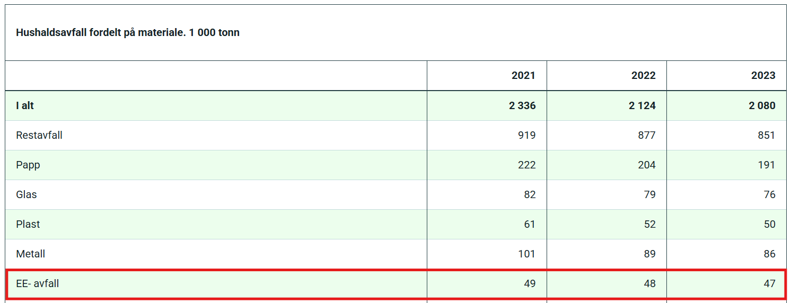

Tverrfaglig Oppgave
Hvor mye blir kastet?
I 2021 så ble det kastet 49 tusen tonn elektrisk avfall fra hushold totalt. Mengden gikk ned til 47 tusen i 2023

Totalt så ble det kastet 147 tusen tonn elektrisk avfall i Norge
https://www.ssb.no/natur-og-miljo/avfall/statistikk/avfall-fra-hushalda
Det er viktig at mest mulig av dette blir resirkulert, både for å spare penger på produsjon, men også for å passe på klimaet